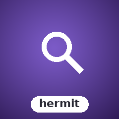

Demos.
VHS-recorded GIFs of every example shipped with the library. Regenerated automatically on every push that touches the source.

Background + overlay
Hermit overlay over a sample background, four filter states.

Fuzzy finder overlay for terminal UIs
Fuzzy-search overlay — type to filter a list, arrow keys to select, Enter to confirm. Ships as a model wrapper that composes into any bubbletea program.
composer require sugarcraft/candy-hermituse SugarCraft\Hermit\Hermit;
$hermit = Hermit::new(
items: ['Ruby', 'PHP', 'Go', 'Rust', 'Python'],
prompt: 'Choose language: ',
);VHS-recorded GIFs of every example shipped with the library. Regenerated automatically on every push that touches the source.